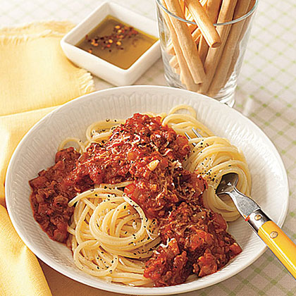

Spaghetti with Meat Sauce

Description
Homemade spaghetti sauce doesn't have to
simmer all day on the stove to be good.
Try our recipe for Spaghetti with Meat
Sauce that has simple ingredients and
is table-ready in an hour.
Ingredients
- 12 ounces ground beef
- 8 ounces button mushrooms, finely chopped
- 1 large onion, finely chopped
- 3 cloves garlic, minced
- 1 28-oz. can tomato puree
- 1 cup low-sodium beef broth
- 2 tablespoons Italian seasoning
- 1 bay leaf
- Salt and pepper
- 12 ounces spaghetti
Steps
-
Warm a large pan over medium-high
heat. Add beef and cook, stirring
and breaking it up, until beginning
to brown, about 5 minutes. Drain
off all but 1 Tbsp. of fat, if
necessary. Add mushrooms, onion
and garlic; sauté for 5 minutes.
Stir in tomato puree, broth,
Italian seasoning, bay leaf and
1/2 tsp. each salt and pepper.
Bring to a boil, then reduce heat
to lowest setting and simmer for
45 minutes, stirring often.
-
Bring a large pot of salted water
to a boil and cook spaghetti until
al dente, about 10 minutes or as
package label directs. Remove bay
leaf from sauce and season with
additional salt and pepper, if
desired. Pour sauce over
spaghetti, toss and serve.